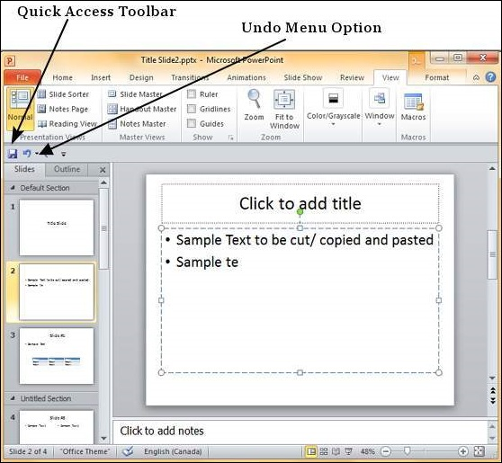
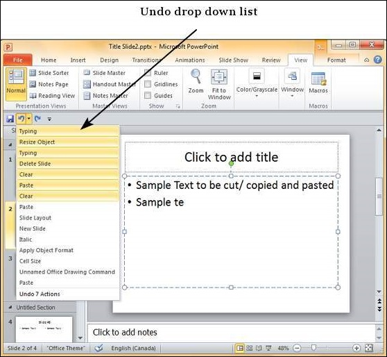
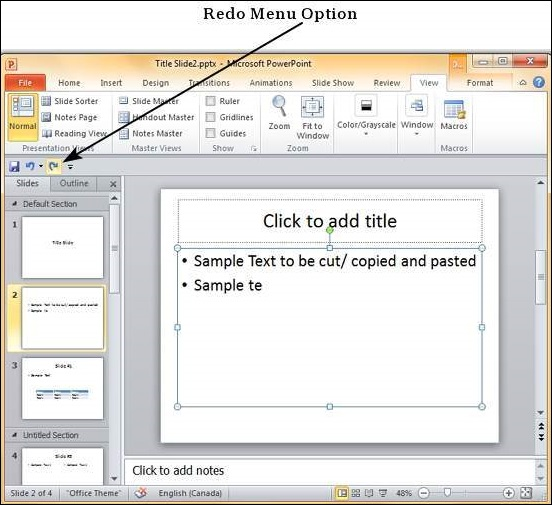

Like any other program, there are times when you may want to undo some of the changes you made to the slides. PowerPoint offers the "Undo/ Redo" option to facilitate this. While working with the "Undo/ Redo" options, you must remember that these will always be sequential which means you can only undo actions in the order they were executed. You cannot undo the last action, retain the remaining 10 actions and undo the eleventh one. If you want to undo the eleventh action, all the subsequent 10 actions will also be undone.
To undo the last action, click on the Undo button in the PowerPoint Quick Access bar.

You can keep clicking on this button repeatedly to undo the series of actions; however a more graceful way of undoing multiple actions is to use the dropdown next to the undo button. Here you can select the list of actions you want to undo by sliding your cursor on top of the actions and click on them.

Redo is an option available only after you have undone at least one action. The redo follows the same logic as the undo option, except in the reverse order. You can click on the redo button one or more times to redo previously undone action in the sequence. You do not have the dropdown option with redo though.
